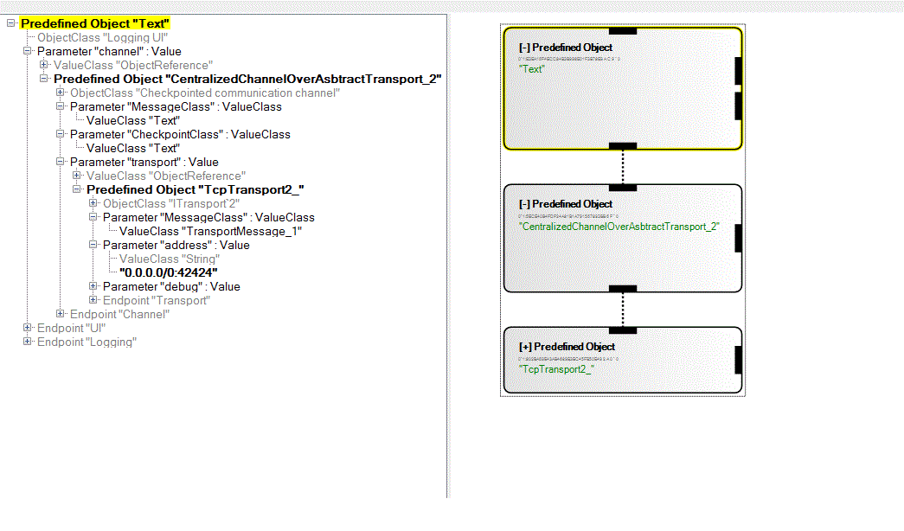
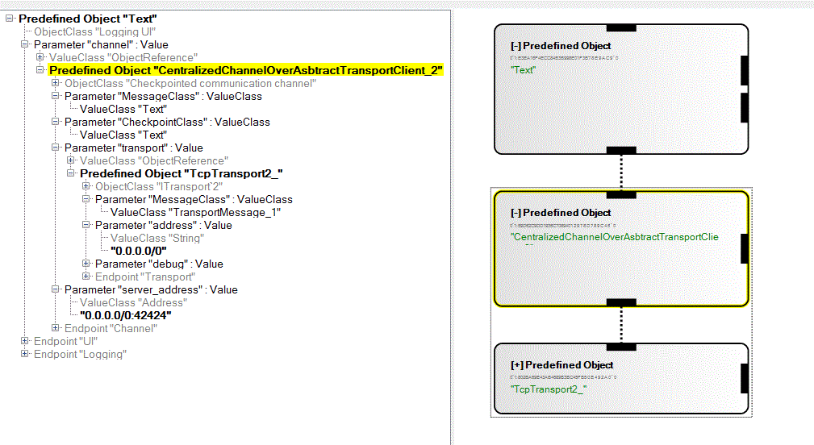

The component is configured to use simple transport like Tcp Transport2 to build centralized server with a checkpointed communication channel (CC), that can accept connections from CC clients. The server listens on a configured port address which is passed as a parameter to TcpTransport2_ component. Clients can connect to the server at this port. In version 2 of the component, when the server gets a new client connection, it asks for the latest checkpoint from other client connections. When the server gets the checkpoint message, it initializes all the pending connections that were waiting to be initialized. The server then relays all the pending messages to the new connections. Server is also responsible to relays messages to all the clients.
  Basic Steps to runExample
CentalizedChannelOverAbstractTransportServer_2_42424.liveobject is the server object and CentalizedChannelOverAbstractTransportClient_2_42424.liveobjects is the client object.
“CentalizedChannelOverAbstractTransport_2” component uses TcpTransport2_ component to abstract the TCP connection functionality. TcpTransport2_ typical accept ip:port combinations, but also allows you to specify a subnet you wish to listen on. For our purposes, anything will do, so we listen on 0.0.0.0/0:42424 (any subnet). The port is this case is 42424. The "Text" component is simply used to display the messages received at the server end.